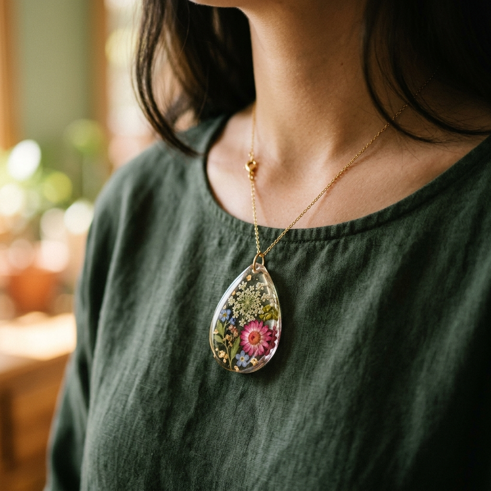
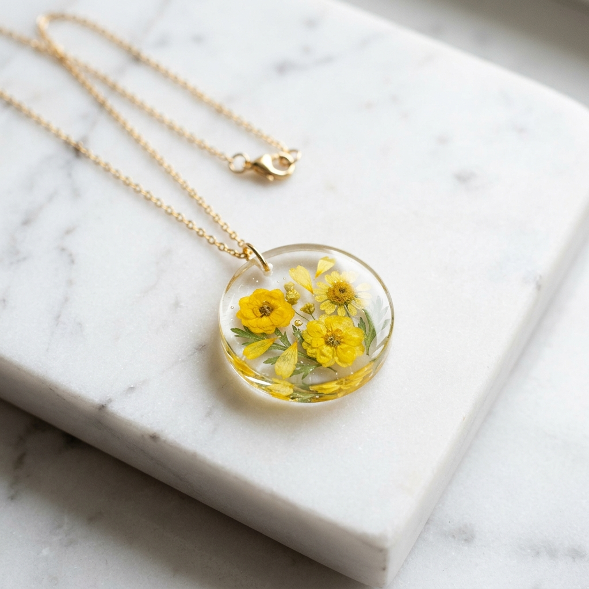
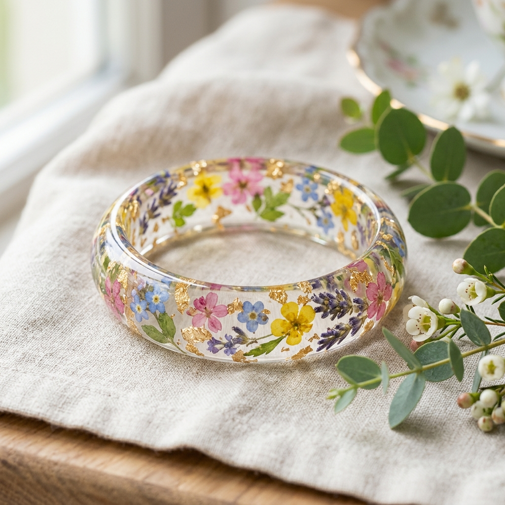
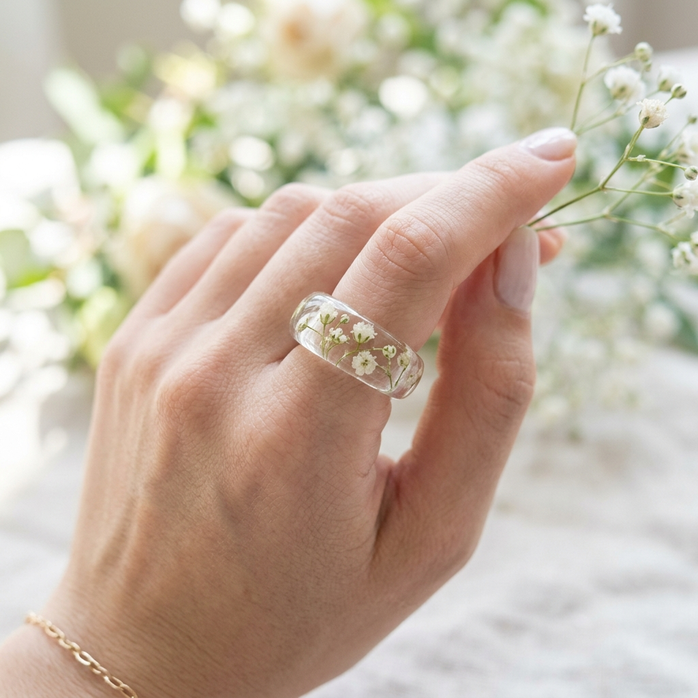
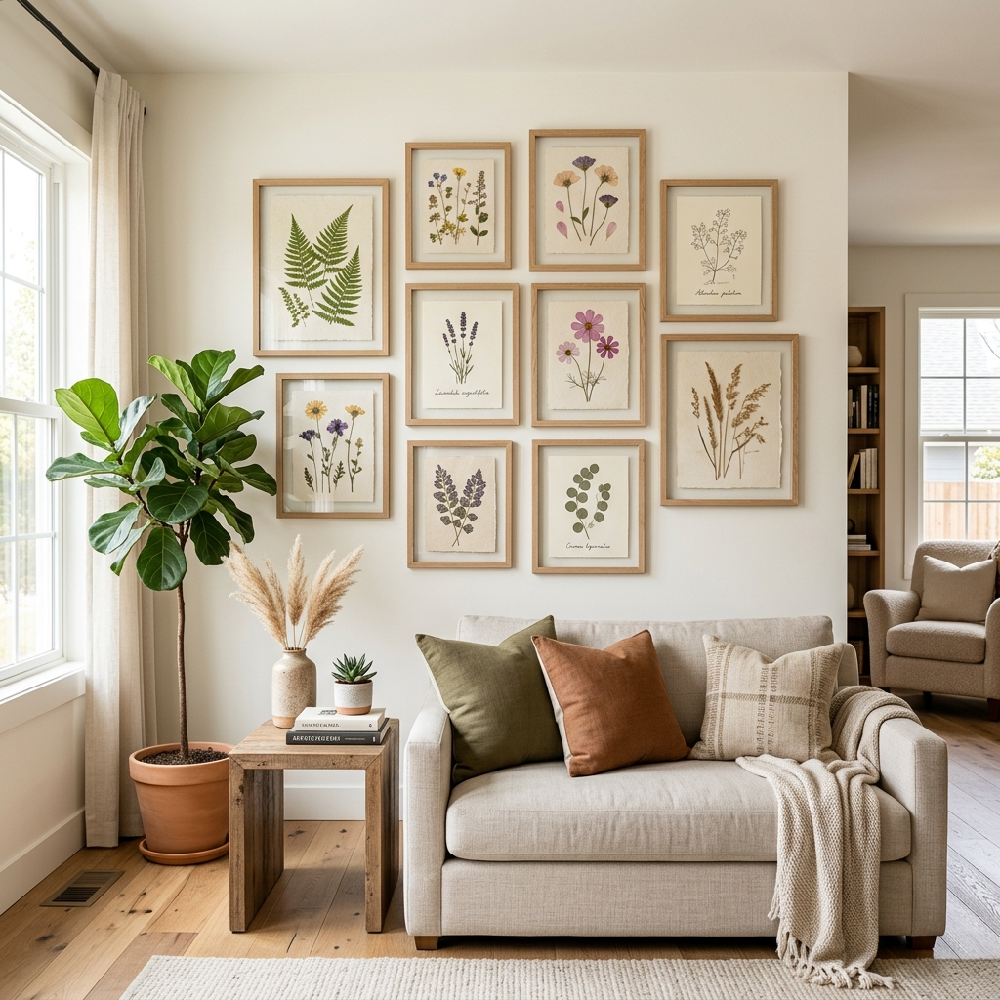
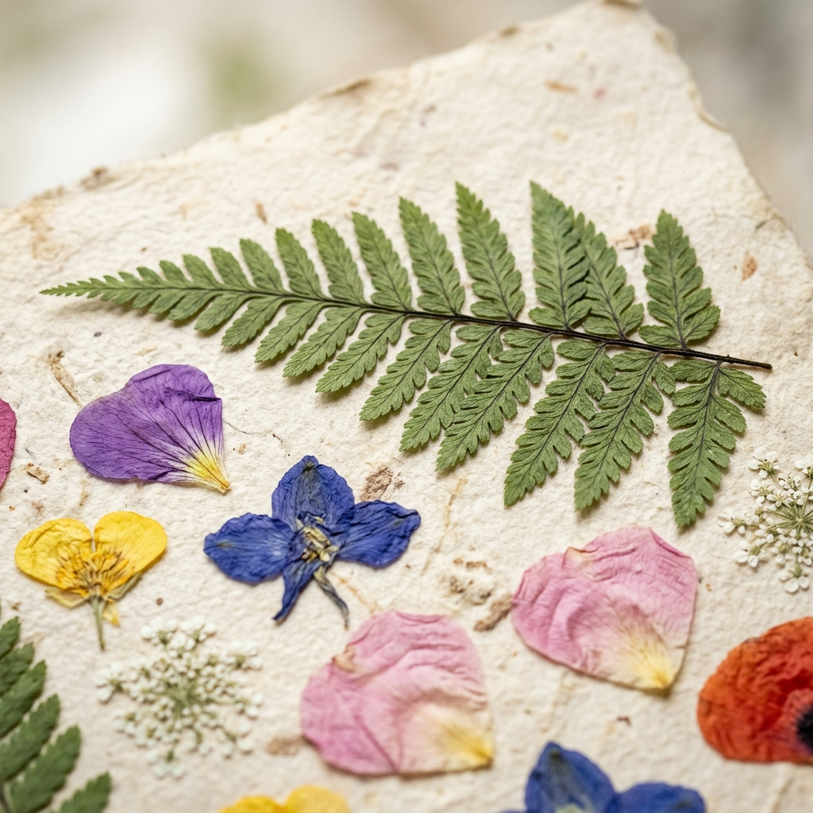
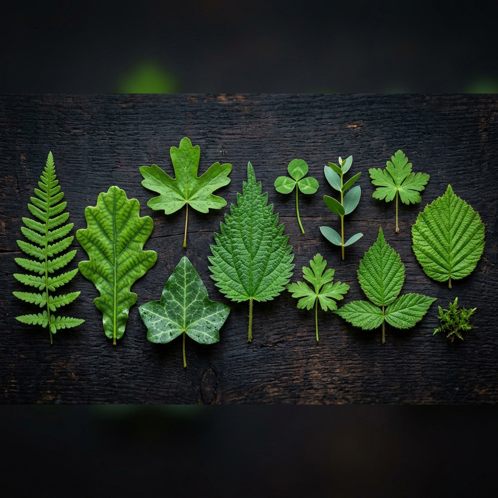
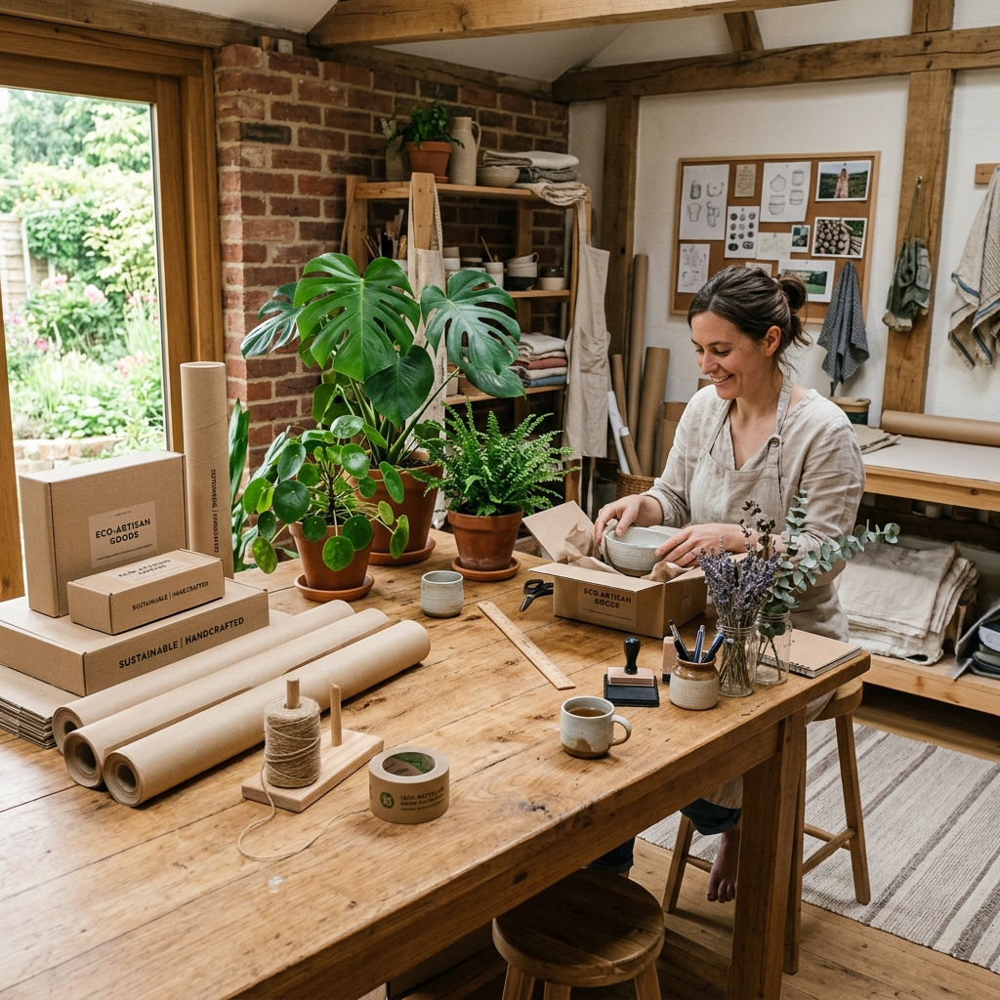
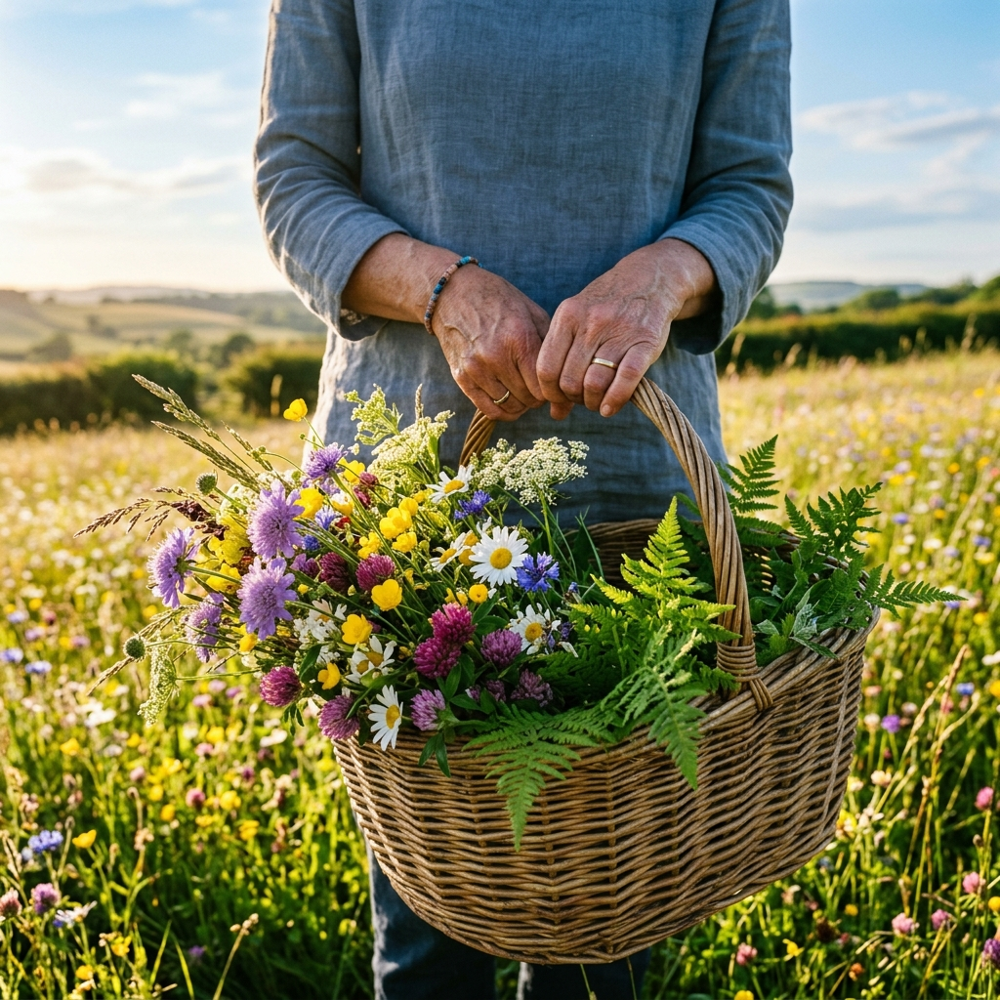

Embrace the elegance of real, hand-pressed flowers preserved forever in crystal-clear resin. Every piece is a unique celebration of nature's finest details.
Explore our seasonal selections, carefully cured with hand-selected blossoms, delicate fern fronds, and shimmering gold flakes.

Featuring dainty meadow buttercups, wild daisies, and queen anne's lace preserved in high-clarity oval bezels.

Bespoke resin rings and bangles capturing petals directly from your bridal bouquet. Embellished with 24k gold leaf flakes.

Genuine pressed maidenhair fern fronds suspended in lightweight circular bezels, reflecting light like drops of forest dew.
Flowers convey feelings that words cannot. Whether celebrating the joy of your wedding day or honoring the memory of a loved one, our studio carefully cures and seals those delicate petals in archival jewelry-grade resin.
Visit our Sage Green oasis and learn the secrets of casting dried botanicals. Take home your very own handmade resin pendant.
Learn to press fresh petals using professional wooden flower presses and cast delicate forget-me-nots in jewelry bezels.
Master mold selection, micro-bubble prevention, gold leaf placement, and multi-stage polishing for spherical resin bands.
A private-feel session for brides looking to preserve their own bouquets. Bring your bouquet; we guide you through casting.
A curation of customer customs, seasonal captures, and custom heirloom commissions created in our studio.





Here are answers to common questions about our botanical casting process, shipping flowers, and jewelry care.
Once you place an order for bouquet preservation, we send you a detailed Care & Shipping Instruction Kit. It explains how to wrap the stems, pack them in a breathable shipping container, and ship them via next-day air to ensure they arrive fresh at our Sage Green studio. You can also drop them off locally if you reside in the area.
We use a state-of-the-art, high-grade jeweler's resin equipped with advanced UV stabilizers and HALS (Hindered Amine Light Stabilizers). This formula is specifically engineered to resist yellowing and degradation from light exposure. To prolong the vibrant colors of the flowers, we recommend storing your jewelry out of direct solar rays when not in use.
Absolutely! We can work with flowers that were dried years ago (for example, dried funeral arrangements or pressed flowers in old books). While they may look more rustic and vintage than freshly preserved petals, they cast beautifully and hold incredible sentimental value.
We use high-quality, hypoallergenic metals. Our standard range includes 925 Sterling Silver, 14k Gold-filled, and 14k Rose Gold-filled components. For some artistic collections, we also offer raw and antiqued jewelry brass. All chain options are nickel-free and lead-free.